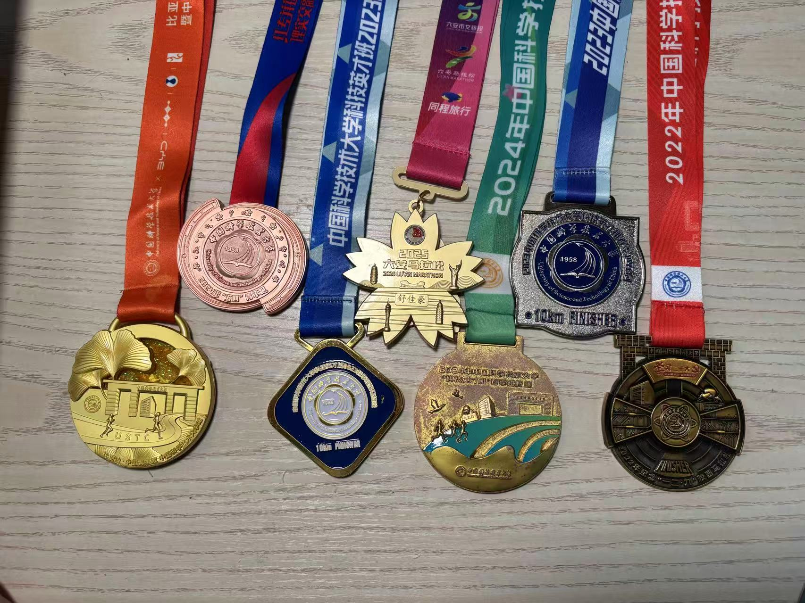

I'm a master's student in Information Technology Strategy (MITS) at Carnegie Mellon University, expected to graduate in December 2027. I received my B.S. in Computer Science from the University of Science and Technology of China (USTC) in June 2026, and spent a visiting semester at UC Berkeley in spring 2025.
我目前在卡内基梅隆大学攻读信息技术战略硕士（MITS），预计 2027 年 12 月毕业。2026 年 6 月本科毕业于中国科学技术大学计算机科学专业，2025 年春季曾在加州大学伯克利分校访学一学期。
My interests include applied machine learning, embodied AI and autonomous driving, and robust AI systems. I'm particularly interested in understanding how models behave in real-world conditions and building systems that work reliably beyond their training environments.
我的兴趣包括应用机器学习、具身智能与自动驾驶，以及鲁棒的 AI 系统。我特别关注模型在真实世界条件下的表现，以及如何构建在训练环境之外依然可靠运行的系统。
I'm looking for Summer 2027 internships in machine learning and software engineering.
我正在寻找 2027 年暑期机器学习或软件工程方向的实习。
Experience经历
- Lenovo联想 Built the data-to-deployment pipeline for vision-language-action (VLA) policies on dual-arm robots, from VR teleoperation data and model fine-tuning to on-robot ROS 2 inference. 为双臂机器人搭建视觉-语言-动作（VLA）策略从数据到部署的完整流程：VR 遥操作数据采集、模型微调，到机器人端的 ROS 2 推理。
- Hong Kong University of Science and Technology香港科技大学（广州） Developed text-conditioned diffusion models for trajectory prediction and closed-loop driving simulation on nuPlan. 研究文本条件扩散模型，用于 nuPlan 上的轨迹预测与闭环驾驶仿真。
- Berkeley AI Research (BAIR), UC Berkeley加州大学伯克利分校 BAIR 实验室 Studied how visual-prompt design (marker color, size, label placement) shifts the accuracy of vision-language models such as GPT-4o and Gemini. 研究视觉提示的设计（标记颜色、大小、标签位置）如何影响 GPT-4o、Gemini 等视觉-语言模型的准确率。
Earlier, I also explored user preferences for AI-generated content and weather-aware image restoration.
更早之前，我还做过 AI 生成内容的用户偏好分析，以及天气感知的图像修复。
Publication论文
- Visually Prompted Benchmarks Are Surprisingly Fragile arXiv:2512.17875, 2025
Miscellaneous其他
Outside of work, I enjoy long-distance running. I've completed several 10K campus races and marathons. Running helps me think through problems and maintain balance.
工作之外，我热爱长跑运动。我完成过多次校园 10 公里跑和马拉松比赛。跑步帮助我思考问题并保持身心平衡。

Medals from 10K races and half marathons 10 公里和半程马拉松奖牌